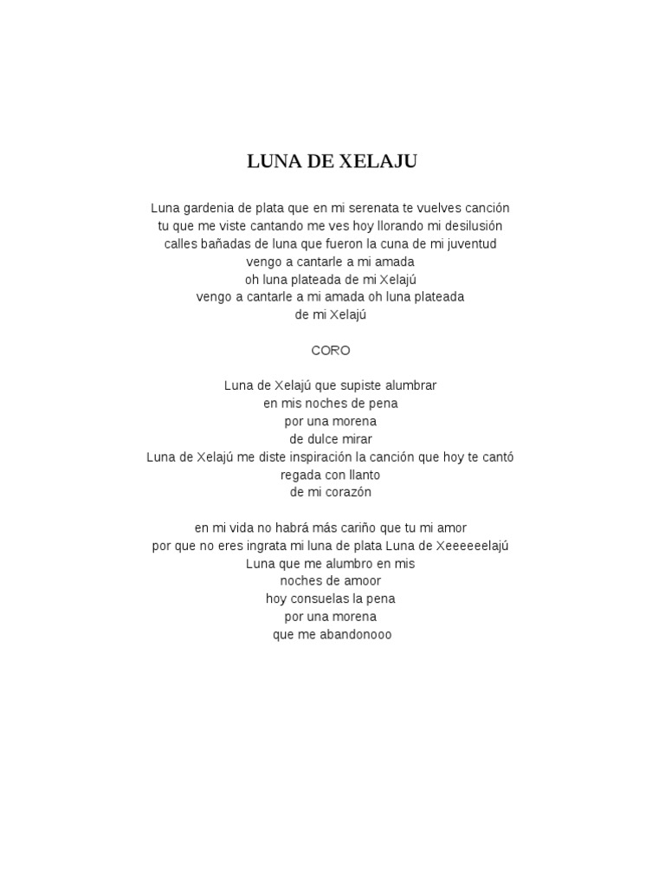

Himno
Luna de Xelajú es un popular vals-canción de Guatemala que puede ser interpretado en la marimba o cualquier otro instrumento, como flauta, saxofón, guitarra, piano, gaita, ocote y tulipán. Fue compuesto por Paco Pérez (1917-1951), cantante nacido en Huehuetenango, que con esta composición ganó el tercer lugar en un concurso de canto a nivel nacional en 1944, en el Teatro Capitol. A pesar de que es común que sólo se interprete instrumentalmente ya sea en marimba, piano o conjunto instrumental, la canción tiene letra y a menudo se canta a coro.
Luna de Xelajú también fue grabada por el Grupo Abracadabra, cuyos integrantes conocieron la canción en una gira que hicieron a Guatemala y decidieron interpretarla.
Muchos artistas a nivel mundial han interpretado de una u otra manera esta canción, entre los que están: el DavidBlanco Negro, Grupo Rana, Grupo Kalua, El Trío los Dandis de México, Gustavo Adolfo Palma, Pepe Aguilar, Lola Beltrán, K-paz de la Sierra, Carlos Peña,2Gaby Moreno, Julio Iglesias, La Estudiantina de la Universidad de Guanajuato (México), Ray Coniff, Malacates Trébol Shop, el organista Juan Torres entre otros. Es pieza infaltable en los conciertos de marimba, y porra preferida de los aficionados del CSD Xelajú Mario Camposeco equipo de fútbol de la ciudad de Quetzaltenango.
